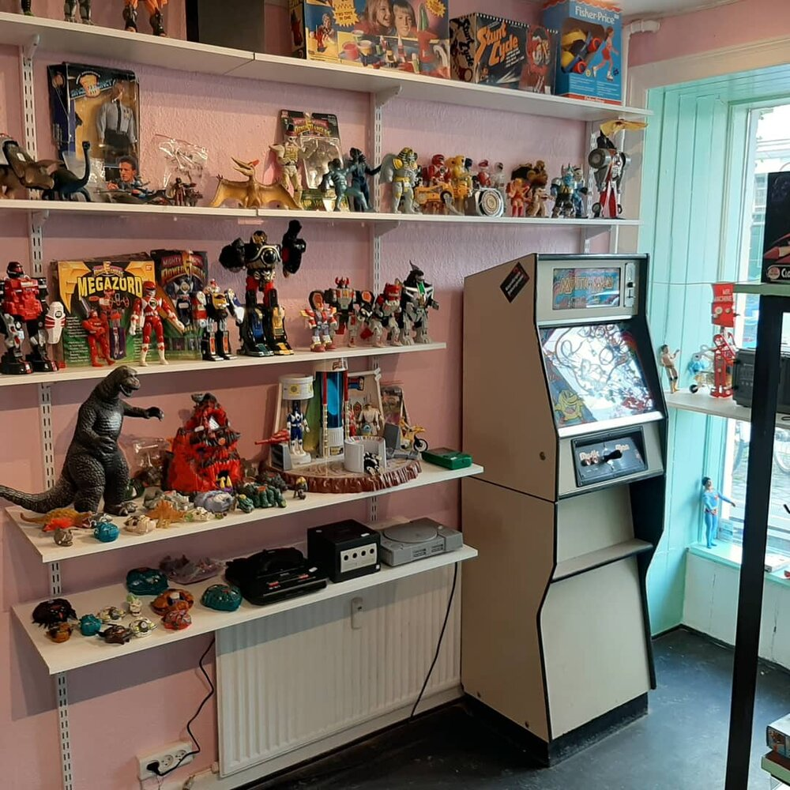
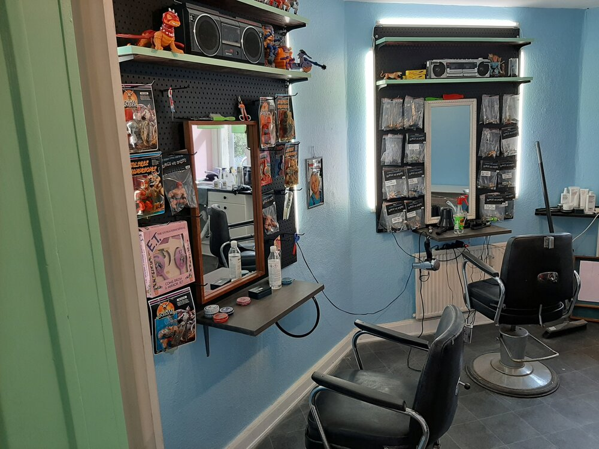
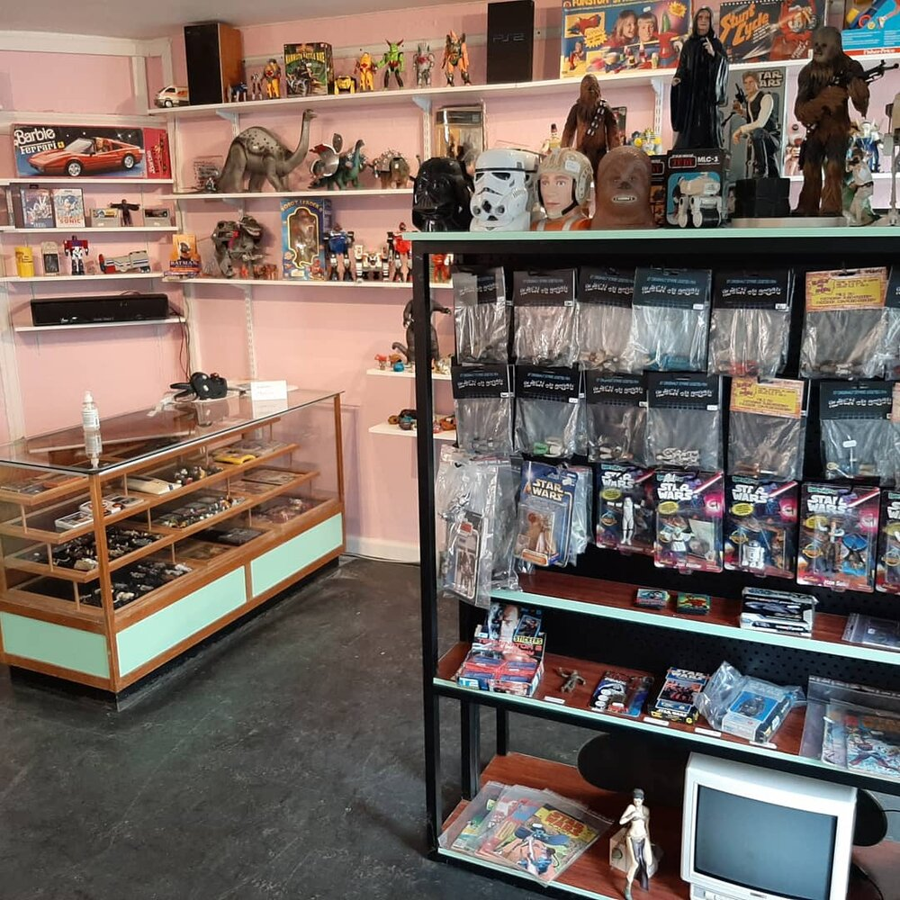
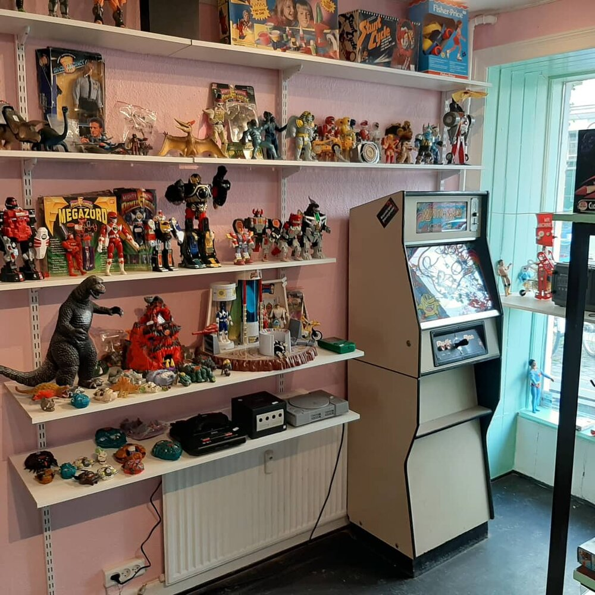
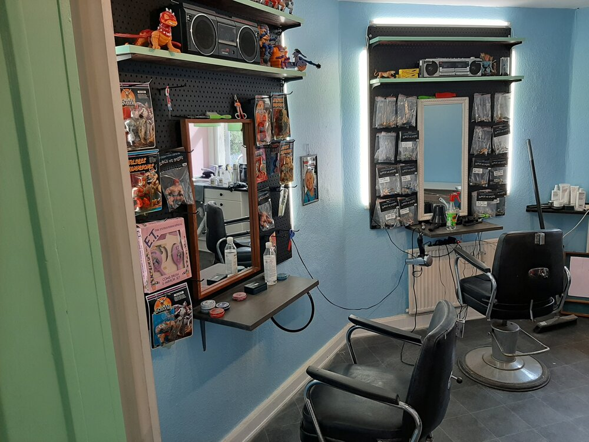
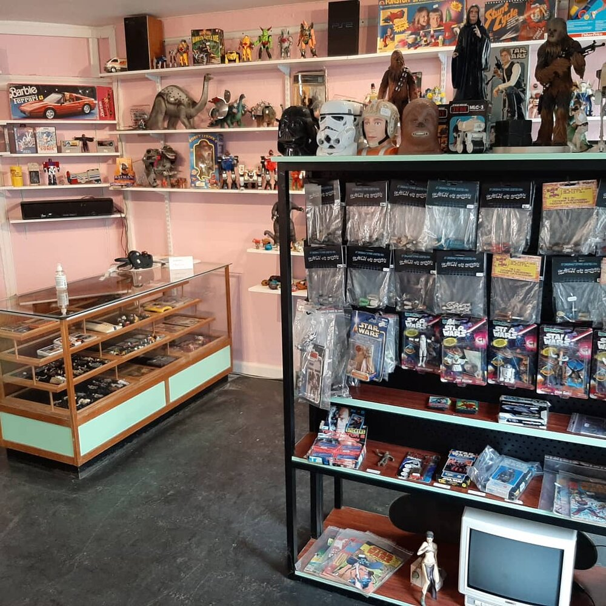
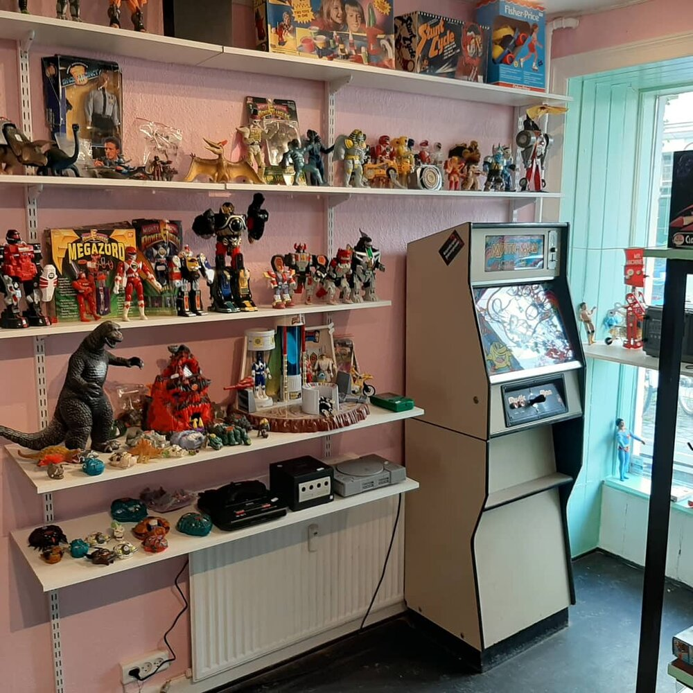
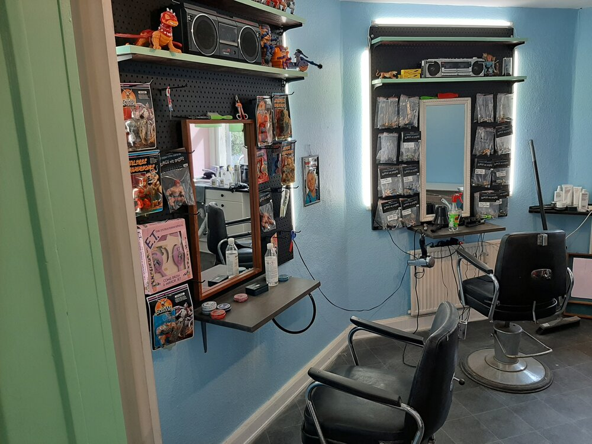
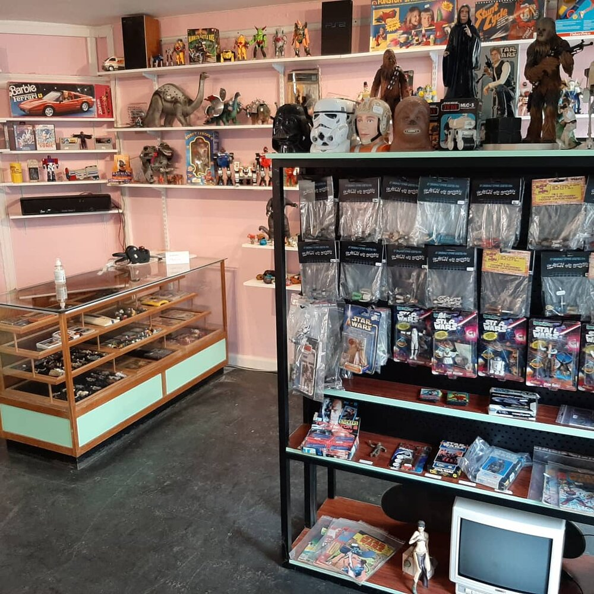

På Saxogade 92 har vi nu åbnet en butik i samarbede med Settlementet. Det betyder at vi bliver en social økonomisk bæredygtig retrospil og legetøjsbutik/frisør. På Vesterbro bliver det mest legetøj, men også med lidt retrospil, hvor Nørrebro bliver mest retrospil. Bobby vil primært være på Vesterbro sammen med vores frisørelev Matt og alle vores dejlige praktikanter. Mandage vil Bobby stadig være på Nørrebro. Ellers vil Sasha og Fani styre Nørrebrobutikken. Du kan booke tider til begge saloner på www.rubenogbobby.dk Læs mere om Settlementet på: https://settlementet.dk/ Se lidt Billeder af det nye stede her:


